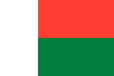

france:
La France, officiellement la République française, est une république constitutionnelle avec un système centralisé et parlementaire à tendance présidentielle, avec une population d'environ 66 millions d'habitants, et elle est située en Europe occidentale, et elle compte plusieurs régions et territoires répartis sur tout le monde. Sa capitale est Paris, sa langue officielle et sa monnaie est le français. L'euro, son emblème et son drapeau sont composés de trois couleurs verticales dans l'ordre bleu, blanc, rouge,

La Tunisie:
La Tunisie est un pays arabe situé à l'extrême nord de l'Afrique. Elle fait partie de la région du Maghreb, bordée par l'Algérie à l'ouest et au sud-ouest, la Libye au sud-est et la mer Méditerranée au nord et à l'est. Il couvre 163 610 km2 et compte 11 millions d'habitants. Il contient l'extrémité orientale des montagnes de l'Atlas et la partie nord du désert du Sahara, avec une grande partie de ses terres

La Belgique:
La Belgique ou le Royaume de Belgique est un pays de « monarchie fédérale » en Europe occidentale. Il est membre fondateur de l'Union européenne et abrite le siège de l'Union européenne, ainsi que de nombreuses autres grandes organisations internationales telles que l'OTAN. La Belgique couvre une superficie de 30 528 kilomètres carrés et sa population est d'environ 11 millions d'habitants, selon les comptes de 2018.
L'Albanie:
L'Albanie ou officiellement la République d'Albanie est l'un des pays de la région des Balkans située dans le sud-est de l'Europe. Il est bordé par le Monténégro au nord-ouest, le Kosovo au nord-est, la République de Macédoine à l'est et la Grèce au sud et au sud-est. Le pays surplombe la mer Adriatique à l'ouest et la mer Ionienne au sud-ouest. Il est à moins de 72 km de l'Italie, de l'autre côté du détroit d'Otrant

Andorre:
Andorre officiellement la Principauté d'Andorre, comme on l'appelle aussi la Principauté des vallées d'Andorre, est un petit pays enclavé du sud-ouest de l'Europe, situé dans les Pyrénées orientales et bordé par l'Espagne et la France. L'Andorre est le sixième plus petit pays d'Europe, avec une superficie de 468 km² et une population de 85 645 habitants. Sa capitale est Andorre-la-Vieille, qui est la plus haute capitale d'Europe
La Bulgarie :
La Bulgarie ou la République de Bulgarie est un pays situé dans le sud-est de l'Europe, surplombant la mer Noire sur son côté ouest. Il est bordé par la Roumanie au nord, la Turquie et la Grèce au sud, et la République de Serbie et la République de Macédoine à l'ouest. Avec une superficie de 110 994 kilomètres carrés, la Bulgarie est le 16e pays en termes de superficie en Europe, et sa capitale et plus grande ville est la ville de Sofia, qui est située sur son côté ouest, et la monnaie officielle de la Bulgarie

Le Bénin:
Le Bénin, ou officiellement la République du Bénin, est un pays situé en Afrique de l'Ouest. Il est bordé à l'ouest par le Togo, à l'est par le Nigeria et au nord par le Burkina Faso et le Niger. Quant au sud, il surplombe le golfe du Bénin, où se trouve la majorité de la population. La capitale du Bénin est Porto-Novo, mais le siège du gouvernement est à Cotonou, la plus grande ville du pays. Le Bénin couvre une superficie d'environ 110 000 kilomètres carrés et compte une population d'environ

Le Burkina Faso:
Le Burkina Faso est un pays d'Afrique de l'Ouest entouré de six pays : le Mali au nord, le Niger à l'est, le Bénin au sud-est, le Togo et le Ghana au sud et la Côte d'Ivoire au sud-ouest. Il est situé dans les pays sahariens en Afrique. Sa superficie est de 274 200 km2 et sa population de 21 510 181. Son économie dépend de l'agriculture et ses produits les plus importants sont les arachides, le coton, le maïs,

Le Burundi:
Le Burundi, ou officiellement la République du Burundi, est un pays enclavé de la région des Grands Lacs en Afrique de l'Est, bordé par le Rwanda au nord, la Tanzanie à l'est et au sud et la République démocratique du Congo à l'ouest. Il est également considéré comme faisant partie de l'Afrique centrale. La capitale burundaise Bujumbura est au sud-ouest bordant le lac Tanganyika.

Le Tchad:
Le Tchad officiellement, est un pays enclavé d'Afrique centrale. Il est bordé par six pays, la Libye au nord, le Soudan à l'est, la République centrafricaine au sud, le Cameroun et le Nigeria au sud-ouest et le Niger à l'ouest. C'est le cinquième plus grand pays d'Afrique par sa superficie.

La République centrafricaine:
La République centrafricaine est un pays enclavé d'Afrique centrale, bordé par le Tchad au nord, le Soudan au nord-est, le Soudan du Sud à l'est, la République démocratique du Congo et la République du Congo au sud, et le Cameroun au Ouest. Il couvre une superficie d'environ 620 000 kilomètres carrés et compte une population estimée à environ 4,4 millions d'habitants en 2008. Sa capitale est Bangui.

Djibouti:
Djibouti ou, est un pays arabe de la région de la Corne de l'Afrique et est membre de la Ligue des États arabes et de l'Union africaine. Il est situé sur la rive ouest du détroit de Bab al-Mandab, et est bordé par l'Érythrée au nord, l'Éthiopie à l'ouest et au sud, et la Somalie au sud-est, alors qu'il surplombe la mer Rouge et le golfe d'Aden au nord. est. De l'autre côté de la mer Rouge dans la péninsule arabique se trouve le Yémen, qui est loin
La Dominique :
La Dominique est une île de la mer des Caraïbes. Elle est bordée au nord et au nord-ouest par la Guadeloupe et au sud-est par la Martinique. Il a une superficie de 754 km2, le point culminant du pays est le Morne Diablotan avec une altitude de 1 447 m. La population du Commonwealth de la Dominique est d'environ 72 500 habitants. La capitale est Roseau.
La République de Cabo Verde:
La République de Cabo Verde, ou République du Cap-Vert, est un pays insulaire du continent africain, composé d'un archipel de dix îles volcaniques situées au milieu de l'océan Atlantique, à l'ouest de la côte de l'Afrique du Nord. C'était autrefois un centre pour le commerce transatlantique des esclaves. Les îles du Cap-Vert sont situées à 570 km de la côte du Sénégal dans l'océan Atlantique, et les îles se composent de deux parties

La Côte d'Ivoire:
La Côte d'Ivoire est un pays d'Afrique de l'Ouest. Il est bordé par le Ghana à l'est, la Guinée et le Libéria à l'ouest, le Mali et le Burkina Faso au nord, et surplombe le golfe de Guinée et l'océan Atlantique au sud.

La République gabonaise:
Gabon ou officiellement : La République gabonaise est un pays situé dans le centre-ouest de l'Afrique bordé par le golfe de Guinée à l'ouest, la Guinée équatoriale au nord-ouest, le Cameroun au nord et la République du Congo à l'est et au sud. Sa superficie est d'environ 270 000 kilomètres carrés et sa population est estimée à 1 500 000 personnes. Sa capitale et plus grande ville est Libreville.

La Guinée:
La Guinée, ou officiellement la République de Guinée, est un pays situé en Afrique de l'Ouest. Anciennement connue sous le nom de Guinée française, elle est aujourd'hui parfois appelée Guinée Conakry pour la distinguer de sa voisine la Guinée-Bissau. Le pays est divisé en huit régions administratives, elles-mêmes divisées en 33 gouvernorats. La capitale est Conakry en plus d'être la plus grande ville et le centre économique du pays. Les autres grandes villes sont Labe et Nzerekore

La Guinée équatoriale:
La Guinée équatoriale ou est un pays d'Afrique centrale, l'un des plus petits pays du continent. Il est bordé par le Cameroun au nord, le Gabon à l'est et au sud et le golfe de Guinée à l'ouest. Est le seul pays africain dont la langue officielle est l'espagnol.

La République de Guinée-Bissau:
La République de Guinée-Bissau est un pays d'Afrique de l'Ouest sur la côte atlantique et l'un des petits pays africains bordé par le Sénégal au nord, la Guinée au sud et à l'est, et l'océan Atlantique à l'ouest. .

Les Comores:
Les Comores sont un pays arabe composé d'îles situées dans l'océan Indien au large de la côte orientale de l'Afrique à l'extrémité nord du canal du Mozambique entre le nord de Madagascar et le nord-est du Mozambique. Les pays les plus proches des Comores sont le Mozambique, la Tanzanie, Madagascar et les Seychelles.

Le Cameroun:
Le Cameroun, officiellement la République du Cameroun, est un pays situé dans la région du centre-ouest de l'Afrique. Il est bordé par le Nigeria à l'ouest ; Tchad au nord-est; à l'est la République centrafricaine ; Au sud se trouvent la Guinée équatoriale, le Gabon et la République du Congo. Les côtes du Cameroun se trouvent sur le golfe de Bonny, qui fait partie du golfe de Guinée et de l'océan Atlantique. Ce pays est souvent appelé "l'Afrique".

Le Royaume du Cambodge:
Le Royaume du Cambodge, anciennement connu sous le nom de Kampuchea, est dérivé de la langue sanskrite Kambojadisa (कम्बोजदेश). Ce pays est situé en Asie du Sud-Est et est bordé par la Thaïlande à l'ouest et au nord-ouest, le Laos au nord, le Vietnam à l'est et au sud-est et le golfe de Thaïlande au sud. La géographie du Cambodge est dominée par le fleuve Mékong, ou "le grand fleuve", et le lac Tonle Sap.

Canada :
Le Canada, officiellement la Confédération du Canada, est un pays d'Amérique du Nord composé de 10 provinces et de trois territoires. Il est situé dans la partie nord du continent et s'étend de l'océan Atlantique à l'est à l'océan Pacifique à l'ouest et s'étend au nord dans l'océan Arctique. Le Canada est le deuxième pays au monde en termes de superficie totale. La frontière du Canada avec les États-Unis au sud et au nord-ouest est la plus longue au Canada

La République démocratique du Congo:
La République démocratique du Congo, également appelée Congo-Kinshasa, ou le Congo, et historiquement connue sous le nom de Zaïre, est un pays situé en Afrique centrale. C'est le plus grand pays d'Afrique subsaharienne, le deuxième plus grand pays du continent africain et le onzième au monde. La République démocratique du Congo est le pays francophone le plus peuplé du monde et le troisième le plus peuplé d'Afrique

La République du Congo:
La République du Congo, appelée Congo-Brazzaville pour la distinguer de la République démocratique du Congo dont la capitale est Kinshasa, est un pays d'Afrique centrale, bordé par le Gabon, le Cameroun, la République centrafricaine, la République démocratique du Congo et Angola. Ce pays comprend de vastes terres estimées à 342 000 km2 et compte une population d'environ 3 686 000 personnes.

Le Québec:
Le Québec est la plus grande province canadienne après le Nunavut, sa capitale est Québec et sa ville la plus importante est Montréal. Il se trouve dans l'est du Canada entre la province de l'Ontario et les provinces de l'Atlantique. Il a une frontière commune, du sud, avec les États-Unis et est traversé par un important fleuve appelé le fleuve Saint-Laurent, qui s'étend de l'océan Atlantique. C'est la plus grande province du Canada, avec une superficie de 1 542 056 kilomètres carrés.

Le Laos:
Le Laos ou officiellement la République démocratique populaire lao ou communément désigné par le nom familier de Muang Lao est un pays enclavé au cœur de la péninsule d'Indochine en Asie du Sud-Est continentale, bordé par le Myanmar ( Birmanie) la Chine au nord-ouest, le Vietnam à l'est, le Cambodge au sud et la Thaïlande à l'ouest.

Le Liban:
Le Liban ou, est un pays arabe situé au Moyen-Orient à l'ouest du continent asiatique. Il est bordé par la Syrie au nord et à l'est, la Palestine occupée - Israël au sud et surplombe la mer Méditerranée à l'ouest. C'est un pays républicain démocratique sectaire. La majeure partie de sa population est d'origine arabe musulmane et chrétienne. Contrairement à la plupart des pays arabes, il y a une présence active des chrétiens dans la vie publique et politique.

Le Luxembourg:
Le Luxembourg, ou officiellement le Grand-Duché de Luxembourg, est un pays situé en Europe occidentale et l'un des pays du Benelux. Il est bordé à l'ouest et au nord-ouest par la Belgique, à l'est et au nord-est par l'Allemagne et au sud par la France. Sa capitale est la ville de Luxembourg, et c'est l'une des capitales de l'Union européenne, car elle abrite un certain nombre d'institutions de l'Union telles que : la Cour de l'Union européenne, la Cour des comptes européenne, le secrétariat du Parlement

Le Mali :
Le Mali ou la République du Mali est un pays enclavé d'Afrique de l'Ouest. Il est bordé par l'Algérie au nord, le Niger à l'est, le Burkina Faso et la Côte d'Ivoire au sud, la Guinée à l'ouest et au sud, et le Sénégal et la Mauritanie à l'ouest. Sa superficie est de plus de 1 240 000 km² et sa population de 14,5 millions d'habitants. Sa capitale est Bamako. Le Mali se compose de huit régions et ses frontières nord s'enfoncent profondément dans le désert du Sahara

Madagascar:
Madagascar, officiellement la République de Madagascar, et anciennement connue sous le nom de République malgache, est un pays insulaire de l'océan Indien, à environ 250 miles (400 km) au large des côtes de l'Afrique de l'Est. Le pays se compose de l'île de Madagascar et de nombreuses petites îles. Après l'éclatement du supercontinent préhistorique Gondwana, Madagascar s'est séparé du sous-continent indien il y a environ 88 millions d'années, permettant à la végétation
L'Egypte:
L'Egypte est un pays arabe situé dans le coin nord-est du continent africain, et il a une extension asiatique, où la péninsule du Sinaï est située dans le continent asiatique. . Il est bordé au nord par la mer Méditerranée, au sud par le Soudan, à l'est par la mer Rouge et au nord-est par la bande de Gaza.

Le Maroc:
Le Maroc, officiellement le Royaume du Maroc, est un pays islamique situé à l'extrême ouest de l'Afrique du Nord, sa capitale est Rabat et sa plus grande ville est Casablanca. Il surplombe la mer Méditerranée au nord et l'océan Atlantique à l'ouest, et est bordé par l'Algérie à l'est et la Mauritanie au sud ; Dans l'étroite bande maritime séparant le Maroc et l'Espagne, il existe des enclaves disputées entre les deux pays, qui sont Ceuta, Melilla et un certain nombre d'îles.

La Macédoine:
La Macédoine du Nord ou officiellement la République de Macédoine du Nord est un pays situé au milieu de la péninsule balkanique dans le sud-est de l'Europe. C'est l'un des pays successeurs de l'ex-Yougoslavie, qui a déclaré son indépendance en 1991 sous le nom de République de Macédoine. Il est devenu membre des Nations Unies en 1993, mais à la suite d'un différend avec la Grèce sur son nom, il a été accepté sous la description provisoire d'une république.

La Mauritanie:
La Mauritanie, ou, est un pays arabe et africain, situé au nord-ouest de l'Afrique sur la rive de l'océan Atlantique, bordé au nord par l'Algérie et le Sahara occidental, une zone contestée sous contrôle marocain, au sud par le Sénégal, et à l'est et au sud par le Mali, et comme point de contact entre l'Afrique du Nord et du Sud qui rassemble Le vaste désert de la Mauritanie depuis des milliers d'années, entre différentes races et cultures

La République de Maurice:
La République de Maurice sont de petites îles au milieu de l'océan Indien, à environ 860 km de Malagashi. Le voyageur portugais Don Pedro Mascarenhas a été le premier à l'introduire dans le monde en 1505, et il a appelé le groupe d'îles maintenant connu sous le nom de Maurice, Rodrigues et Réunion le nom de Mascarenhas. En 1598, une flotte hollandaise mouille à Grand Port

La République de Moldavie:
La République de Moldavie est un pays européen républicain situé en Europe de l'Est entre l'Ukraine et la Roumanie. La plupart des habitants de la Moldavie sont moldaves, à l'exception de la bande transnistrienne située à l'est du Dniestr, qui est gouvernée par Askar Ross et ils demandent à rejoindre la Russie. Elle est membre de l'Organisation de Guam pour le développement démocratique et économique depuis 1991 après la dissolution de l'Union soviétique. Il y a une partie du territoire de la Moldavie

Monaco:
Monaco, officiellement la Principauté de Monaco, est une principauté souveraine sur la côte méditerranéenne de la Côte d'Azur. Elle est entourée par la République française sur trois côtés et son centre est à environ 16 km de la République italienne. Sa superficie est d'environ 1,98 kilomètres carrés et sa population est d'environ 37 308 personnes. C'est le pays le plus densément peuplé du monde. est le produit intérieur brut
La province du Nouveau-Brunswick:
La province du Nouveau-Brunswick est une province du Canada, sa capitale est Fredericton et la ville de Saint John contient la plus grande population de la province, et elle est considérée comme la seule province canadienne dont la langue officielle est constitutionnellement double. Il a été découvert par Samuel de Champlain en 1604 après JC, puis il est devenu une province britannique depuis l'année 1763 après JC, et il a été séparé de la Nouvelle-Écosse en 1784 après JC, et il est devenu une province

Haïti:
Haïti, créole haïtien : officiellement la République d'Haïti est un pays situé sur l'île d'Hispaniola dans les Grandes Antilles dans la mer des Caraïbes.Haïti occupe les trois huitièmes de l'ouest de l'île qu'elle partage avec la République dominicaine. Avec une superficie de 27 750 km2, Haïti est le troisième plus grand pays des Caraïbes par sa superficie.
Wallonie:
Wallonie, est une région parmi les régions dans lesquelles l'usage de la langue française prévaut parmi les trois régions qui composent la Belgique. Elle occupe 55% de la superficie de la Belgique et se classe au troisième rang en termes de population.Le territoire appartient à l'Organisation Internationale de la Francophonie depuis 1980. Pendant la révolution industrielle, la Wallonie était la deuxième industrielle après le Royaume-Uni,
La Grèce:
La Grèce, ou officiellement la République hellénique, également connue depuis l'Antiquité sous le nom de Hellas, est un pays situé dans le sud-est de l'Europe. Selon le recensement de 2019, la population de la Grèce était d'environ 10 750 000 habitants. Athènes est la capitale et la plus grande ville du pays, suivie de Thessalonique. Le patrimoine culturel unique de la Grèce, sa grande industrie touristique, son secteur maritime de premier plan et son importance géostratégique la classent parmi les puissances moyennes. Le riche héritage historique de la Grèce se reflète dans l'affiliation de 18